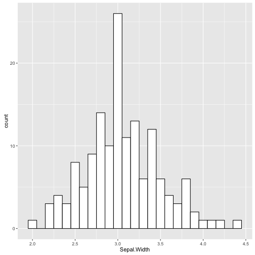

library(psych)
pairs.panels(longley)

- bivariate scatter plots below the diagonal
- histograms on the diagonal
- Pearson correlation above the diagonal
- also should be checking assumptions
Jenna Blumenthal
Tutorial #: 4
MIE 1402
ggplot(longley, aes(Year, Employed)) + geom_point()

ggplot(longley, aes(Year, Employed)) + geom_point() + geom_smooth(method="lm")

library(datasets)
kable(head(longley))
| GNP.deflator | GNP | Unemployed | Armed.Forces | Population | Year | Employed | |
|---|---|---|---|---|---|---|---|
| 1947 | 83.0 | 234.289 | 235.6 | 159.0 | 107.608 | 1947 | 60.323 |
| 1948 | 88.5 | 259.426 | 232.5 | 145.6 | 108.632 | 1948 | 61.122 |
| 1949 | 88.2 | 258.054 | 368.2 | 161.6 | 109.773 | 1949 | 60.171 |
| 1950 | 89.5 | 284.599 | 335.1 | 165.0 | 110.929 | 1950 | 61.187 |
| 1951 | 96.2 | 328.975 | 209.9 | 309.9 | 112.075 | 1951 | 63.221 |
| 1952 | 98.1 | 346.999 | 193.2 | 359.4 | 113.270 | 1952 | 63.639 |
na.omit(longley)
# data types
str(longley)
## 'data.frame': 16 obs. of 7 variables:
## $ GNP.deflator: num 83 88.5 88.2 89.5 96.2 ...
## $ GNP : num 234 259 258 285 329 ...
## $ Unemployed : num 236 232 368 335 210 ...
## $ Armed.Forces: num 159 146 162 165 310 ...
## $ Population : num 108 109 110 111 112 ...
## $ Year : int 1947 1948 1949 1950 1951 1952 1953 1954 1955 1956 ...
## $ Employed : num 60.3 61.1 60.2 61.2 63.2 ...
# descriptive statistics
stat.desc(longley, basic=FALSE)
## GNP.deflator GNP Unemployed Armed.Forces
## median 100.6000000 381.4270000 314.3500000 271.7500000
## mean 101.6812500 387.6984375 319.3312500 260.6687500
## SE.mean 2.6978884 24.8487344 23.3616062 17.3979901
## CI.mean.0.95 5.7504129 52.9638237 49.7940849 37.0829381
## var 116.4576250 9879.3536593 8732.2342917 4843.0409583
## std.dev 10.7915534 99.3949378 93.4464247 69.5919604
## coef.var 0.1061312 0.2563718 0.2926316 0.2669747
## Population Year Employed
## median 116.80350000 1.954500e+03 65.50400000
## mean 117.42400000 1.954500e+03 65.31700000
## SE.mean 1.73902539 1.190238e+00 0.87799209
## CI.mean.0.95 3.70664488 2.536932e+00 1.87139584
## var 48.38734893 2.266667e+01 12.33392173
## std.dev 6.95610156 4.760952e+00 3.51196836
## coef.var 0.05923918 2.435893e-03 0.05376806
library(psych)
pairs.panels(longley)
lm.1 <- lm(Employed ~ GNP, data = longley)
summary(lm.1)
##
## Call:
## lm(formula = Employed ~ GNP, data = longley)
##
## Residuals:
## Min 1Q Median 3Q Max
## -0.77958 -0.55440 -0.00944 0.34361 1.44594
##
## Coefficients:
## Estimate Std. Error t value Pr(>|t|)
## (Intercept) 51.843590 0.681372 76.09 < 2e-16 ***
## GNP 0.034752 0.001706 20.37 8.36e-12 ***
## ---
## Signif. codes: 0 '***' 0.001 '**' 0.01 '*' 0.05 '.' 0.1 ' ' 1
##
## Residual standard error: 0.6566 on 14 degrees of freedom
## Multiple R-squared: 0.9674, Adjusted R-squared: 0.965
## F-statistic: 415.1 on 1 and 14 DF, p-value: 8.363e-12
round(sqrt(0.9674), 4)
## [1] 0.9836
round(cor(longley$GNP, longley$Employed), 4)
## [1] 0.9836
lm.2 <- lm(Employed ~ GNP.deflator + GNP + Unemployed + Armed.Forces + Population + Year, data = longley)
lm.2 <- lm(Employed ~ ., data = longley)
summary(lm.2)
##
## Call:
## lm(formula = Employed ~ ., data = longley)
##
## Residuals:
## Min 1Q Median 3Q Max
## -0.41011 -0.15767 -0.02816 0.10155 0.45539
##
## Coefficients:
## Estimate Std. Error t value Pr(>|t|)
## (Intercept) -3.482e+03 8.904e+02 -3.911 0.003560 **
## GNP.deflator 1.506e-02 8.492e-02 0.177 0.863141
## GNP -3.582e-02 3.349e-02 -1.070 0.312681
## Unemployed -2.020e-02 4.884e-03 -4.136 0.002535 **
## Armed.Forces -1.033e-02 2.143e-03 -4.822 0.000944 ***
## Population -5.110e-02 2.261e-01 -0.226 0.826212
## Year 1.829e+00 4.555e-01 4.016 0.003037 **
## ---
## Signif. codes: 0 '***' 0.001 '**' 0.01 '*' 0.05 '.' 0.1 ' ' 1
##
## Residual standard error: 0.3049 on 9 degrees of freedom
## Multiple R-squared: 0.9955, Adjusted R-squared: 0.9925
## F-statistic: 330.3 on 6 and 9 DF, p-value: 4.984e-10
library(QuantPsyc)
lm.beta(lm.2)
## GNP.deflator GNP Unemployed Armed.Forces Population
## 0.04628202 -1.01374635 -0.53754258 -0.20474069 -0.10122111
## Year
## 2.47966438
Hierarchical regression
Forced entry regression
Stepwise regression
anova(lm.1, lm.2)
## Analysis of Variance Table
##
## Model 1: Employed ~ GNP
## Model 2: Employed ~ GNP.deflator + GNP + Unemployed + Armed.Forces + Population +
## Year
## Res.Df RSS Df Sum of Sq F Pr(>F)
## 1 14 6.0361
## 2 9 0.8364 5 5.1997 11.19 0.001186 **
## ---
## Signif. codes: 0 '***' 0.001 '**' 0.01 '*' 0.05 '.' 0.1 ' ' 1
rstandard(lm.2)
rstudent(lm.2)
cooks.distance(lm.2)
dfbeta(lm.2)
dffits(lm.2)
hatvalues(lm.2)
covratio(lm.2)
cor(longley)
## GNP.deflator GNP Unemployed Armed.Forces Population
## GNP.deflator 1.0000000 0.9915892 0.6206334 0.4647442 0.9791634
## GNP 0.9915892 1.0000000 0.6042609 0.4464368 0.9910901
## Unemployed 0.6206334 0.6042609 1.0000000 -0.1774206 0.6865515
## Armed.Forces 0.4647442 0.4464368 -0.1774206 1.0000000 0.3644163
## Population 0.9791634 0.9910901 0.6865515 0.3644163 1.0000000
## Year 0.9911492 0.9952735 0.6682566 0.4172451 0.9939528
## Employed 0.9708985 0.9835516 0.5024981 0.4573074 0.9603906
## Year Employed
## GNP.deflator 0.9911492 0.9708985
## GNP 0.9952735 0.9835516
## Unemployed 0.6682566 0.5024981
## Armed.Forces 0.4172451 0.4573074
## Population 0.9939528 0.9603906
## Year 1.0000000 0.9713295
## Employed 0.9713295 1.0000000
library(car)
vif(lm.2) # problem if largest VIF is > 10
## GNP.deflator GNP Unemployed Armed.Forces Population
## 135.53244 1788.51348 33.61889 3.58893 399.15102
## Year
## 758.98060
mean(vif(lm.2)) # regression may be biased if substantially > 1
## [1] 519.8976
1/vif(lm.2) # problem if tolerance < 0.1
## GNP.deflator GNP Unemployed Armed.Forces Population
## 0.0073783075 0.0005591235 0.0297451814 0.2786345641 0.0025053174
## Year
## 0.0013175567
plot(lm.2)
Plot 1: Residuals vs Fitted
Plot 2: Q-Q plot
Plot 3: Standardized residuals vs fitted values
Plot 4: Cook distances
longley.uncor <- subset(longley, select = c("GNP", "Unemployed", "Armed.Forces", "Employed"))
longley.rm_outliers <- subset(longley, Year != 1951)
principal(longley, 3, rotate="oblimin")
/
#